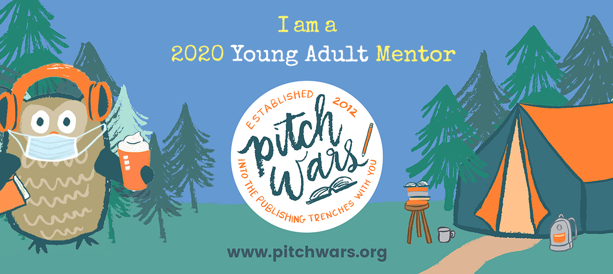

hi there
Hi there, Pitch Wars hopeful! Please take a sip of bubble tea and settle in. I’m so excited to read your submission!
about pitch wars
A little about Pitch Wars: it’s a mentoring program where published and agented authors, editors, and interns each choose a writer to help out! They’ll spend three months honing the writer’s manuscript before going on to the Agent Showcase, where literary agents will read a pitch and first page, with the potential of requesting more. This year, I’ll be mentoring Young Adult.about me
My debut contemporary novel, You Had Me At Hello World, sold to Simon & Schuster Books For Young Readers earlier this year in a six-figure auction, two-book deal. I’m represented by Penny Moore of Aevitas Creative Entertainment. Fun fact: I submitted to Pitch Wars twice and was never chosen as a mentee! My first year submitting, I got one partial request but was not selected. My second year, I got some requests but withdrew after getting an offer of representation from Penny. Even though I was never a mentee, Pitch Wars was a wonderful way to stay motivated and befriend the writing community.
my mentoring style & what you can expect
If you're my mentee, I'm here to be your champion. You'll get an edit letter, but we'll also set up a call afterwards to answer any questions you might have. Craft-wise, I love working on character development, plot structure, and style. I've professionally edited before and am here to work with you to elevate your vision. You can check out a critique I did for the Pitch Wars blog here.I can also offer a steady supply of Pusheen!

what I'm looking for
- I want alllll the YA contemporary! I’m a huge sucker for coming-of-age stories, girls who are exactly like other girls, chosen families, and queer joy. Give me all the eye-roll-inducing puns, teenage awkwardness, sex positivity, and complicated families. Sarcastic, sassy voices get me every time. Bonus points for wit.
- Contemporary manuscripts with a larger-than-life concept—a televised competition, an unusual occupation, etc.—are so fun. I'd love to see it!
- Twisty mysteries and thrillers that will keep me up all night or make me *gasp* are my first love, so please send those my way. If somebody dies in the first chapter, that’s a surefire way to get me to keep reading. Books about rich kids who play dangerous games are my guilty pleasure. If your manuscript has ever been described as unputdownable, please give me the opportunity to not put it down.
- Stories that touch on big social justice issues—especially immigration, incarceration, and racial justice—are near and dear to my heart.
- Gorgeous, lyrical writing is lovely. I'm always in the mood for beautiful imagery and poetic sentences.
- I'm open to a wide age range. If your protagonist is just starting high school or grappling with college life, I'm here for it.
my favorite books
- Frankly in Love by David Yoon
- Loveboat Taipei by Abigail Hing Wen
- Simon vs. The Homo Sapiens Agenda by Becky Albertalli
- The Miseducation of Cameron Post by emily danforth
- When Dimple Met Rishi by Sandhya Menon
- Aristotle and Dante Discover the Secrets of the Universe by Benjamin Alire Sáenz
- Somewhere Only We Know by Maurene Goo
- The Sun is Also a Star by Nicola Yoon
what I especially love
- The enemies-to-lovers or rivals-to-lovers trope
- Cinnamon roll love interests
- STEM nerds (I'm one myself!)
- Intersectional feminism as a central theme
- A university or boarding school setting
- Nuanced explorations of diaspora experiences
- Strong we-would-die-for-each-other friendships
not for me
- I’m not looking for anything paranormal, sci-fi, fantasy, or historical.
- Books in which mental health issues are a main focus are likely not right for me.